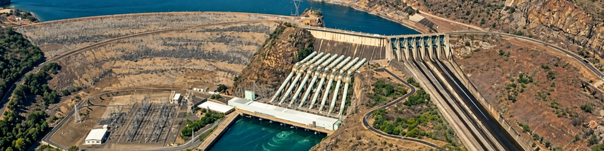

Energy systems · Operations research
Victor A. D. de Faria
Better decisions for complex energy systems.
I develop optimization models for energy planning and operations, connecting investments in infrastructure with the uncertainty and detail of real systems.
Senior Data Science Consultant · Duke Energy
Charlotte, North Carolina
Ph.D. in Operations Research · North Carolina State University
Former Researcher III · National Renewable Energy Laboratory
Research, practice, and learning
My work brings mathematical optimization and uncertainty analysis to electricity planning, operations, and infrastructure risk. I am interested in methods that remain computationally practical while representing the decisions that matter.
At Duke Energy, I develop methods for generation dispatch and fuel management. Previously, I worked on capacity expansion and reliability at NREL, and on energy investment and infrastructure risk during my Ph.D. at NC State.
Projects
Energy portfolios, storage, and infrastructure resilience. Browse short research stories and the work behind them.
Presentations
Conference talks and posters, with dates, presenter credits, and available materials.
Teaching
A growing home for lecture notes, worked examples, slides, and computational notebooks.
Areas of interest
Energy systems optimization · Capacity expansion · Stochastic programming · Resource adequacy · Infrastructure risk
Research overview · Research software · GitHub